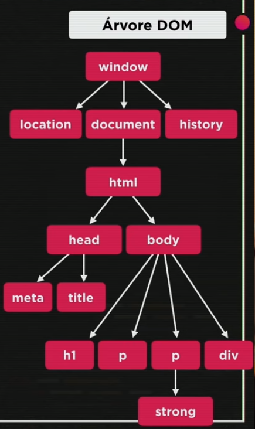
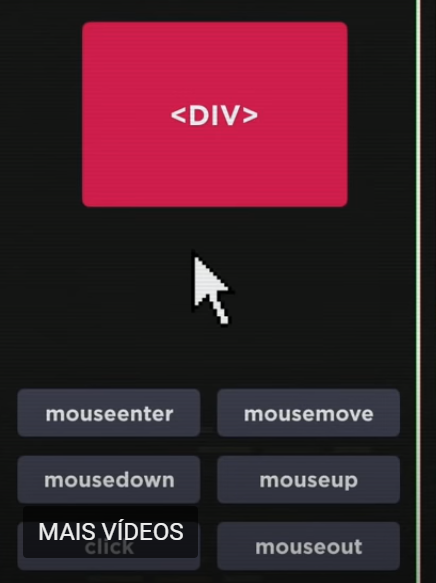
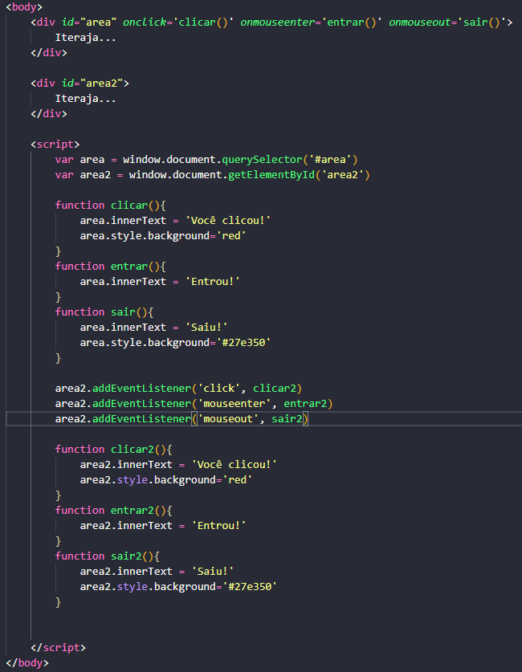
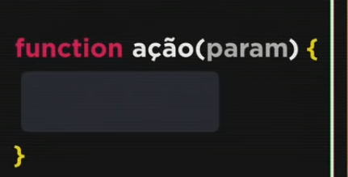

Aula 09
Introdução ao DOM
O que é DOM?
O Document Object Model é uma lista dos elementos que estão no nosso website e que podemos acessar por JavaScript. O DOM é representado por meio de uma árvore. A raiz dessa árvore é o objeto window. Dentro dele, temos o objeto document e dentro deste o html, que possui o head e o body, por exemplo.
Na árvore DOM, os elementos pais são chamados de patrents e os filhos de Child
Como acessar os elementos pelo JavaScript?
O elementos podem ser acessados por:
- Tag
- getElementByTagName()[index do parágrafo, caso queira selecionar apenas 1]
- ID
- getElementById()
- Nome
- getElementsByName()
- Classe
- getElementsByClassName()
- Seletor
- querySelector()
- querySelectorAll()
Quando o método referenciar vários elementos e eu quiser selecionar apenas 1, utiliza-se o index [] após o método.
Exercício 005Aula 10
Eventos DOM
O que são eventos?
Evento é tudo que pode ocorrer como interação do usuário com determinado elemento. Mouseenter, Mpusemove, Mousedown, Mouseup, click, mouseout.
Os eventos podem ser declarados na parte html (atributo 'on'+'nome do método'='nome da function()') ou diretamente no script, adicionando listeners.
 Exercício 006O que são funções?
São blocos de códigos delimitados por chaves que ocorrem quando certo evento é acionado. Para declarar uma função, utilizamos a palavra reservada 'function', seguida do nome desejado para a função, parênteses que indicam os parâmetros e o bloco de código entre {}.
 Exercício 007